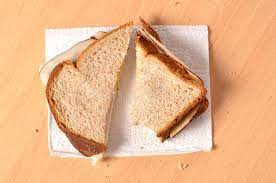

Boring Sandwich

Description
This is exactly what it sounds like. It's a sandwich, but not a very fun one considering its limited textures and flavors. However, it nutritionally has most of what you need and you're unlikely to be missing the ingredients called for, making it a pretty convenient choice.
Ingredients
- 2 slices of bread of your choice
- Lunch meat of your choice. Probably ham, turkey, or roast beef
- 1-2 slices of cheese, such as American or provolone
- A condiment such as mustard or mayonnaise
Steps
- Lay out the slices of bread
- On one of the slices, layer as much of the lunch meat as you'd like
- On top of the meat, add your cheese slice(s)
- On the plain slice of bread, spread your condiment of choice
- Place the bread with your condiment on top of the meat and cheese
- Enjoy!